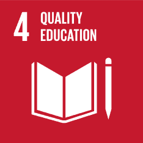
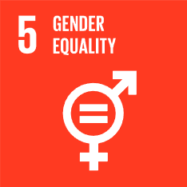
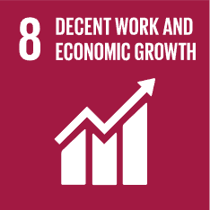
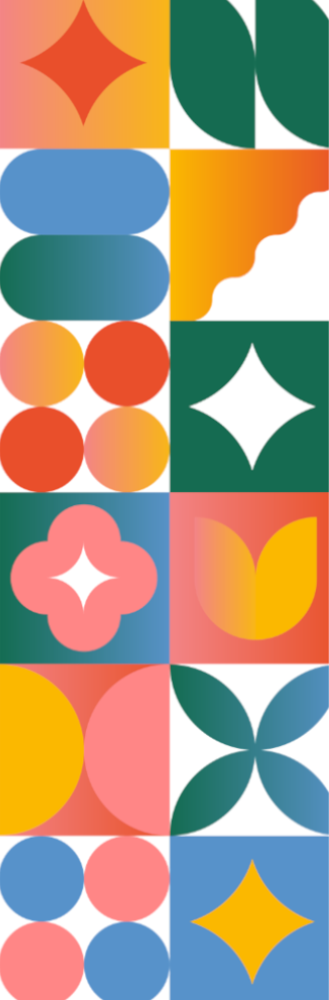

Inicio
Sobre Nosotros
Áreas
Educación y Cultura
Ciencia e Innovación
Políticas y Gobernanza
Gestión de las
Comunicaciones
Relacionamiento y
Gestión de Recursos
Women's Empowerment
Eje transversal
Empoderamiento de las mujeres Jóvenes
Puntos focales: Kristel Leiva y Ana Paula Guillen
Nuestro compromiso
Empoderar a las mujeres en los Sistemas Agroalimentarios

Educación de calidad:
Desarrollar habilidades técnicas y digitales para el trabajo decente en el sector agroalimentario.

Educación de calidad:
Promover la economía del cuidado y eliminar barreras de género en las zonas rurales.

Trabajo decente:
Impulsar el emprendimiento juvenil y el empleo digno en comunidades agrícolas.
Nuestro Plan de acción 2025-2026
Empoderamiento económico
Programa "Mujeres Rurales Innovan" Mentorías en liderazgo y agroemprendimiento
Talleres de agricultura digital y cambio climático
Capacitación en alfabetización financiera y microcréditos
Aliados: FAO Perú, MIDAGRI Joven, COFIDE, universidades agrarias

Educación transformadora
Plataforma Educativa Juvenil Blog y pódcast trilingüe (español/quechua/aymara)
Historias inspiradoras de jóvenes rurales
Recursos técnicos accesibles
Aliados: WFF , FAO LAC
Visibilidad y próximos hitos
CSW 70 - ONU Mujeres Marzo 2026, Nueva York
Presentación de experiencia piloto peruana sobre empoderamiento económico de jóvenes rurales
Año Internacional de la Mujer Agricultora
Publicación del informe regional "From Policy to Action – Latin America" con participación activa del Capítulo Perú